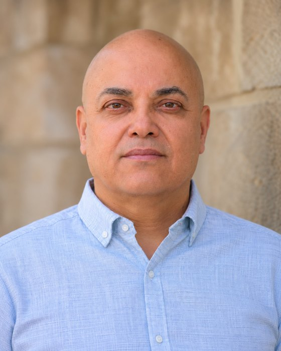

著者について
ゾハル・デュラン
独立研究者 · イスラエル・ラムラ
- メール zduran9@gmail.com
- ORCID 0009-0005-3194-9387
- Zenodo 10.5281/zenodo.22743615 （シリーズの全バージョン）
研究について
LEFモデル（Lunar Elevation and Fission：月の隆起と分裂）は、長年にわたる独自の研究の成果です。その中心にあるのは単純な問いです。月が地球とこれほど近い物質でできているなら、巨大衝突の破片からではなく、地球とつながったまま地球から形づくられた可能性はないだろうか。この問いを一歩ずつ追った結果、完全なプロセスモデルにたどり着きました。高温で高速に自転する若い地球が洋ナシ形の隆起を持ち上げ、月がその先端で成長し、地球の自転がすでに軌道速度を与えていた共回転半径で解放された、という過程です。
この研究は十四本の論文に発展し、それぞれがメカニズム論文として書かれています。各段階について、それを決める数値と、それを検証する観測を示しています。同じ考え方は火星の衛星、さらに太陽系全体の衛星の誕生にも適用されました。すべての論文は十の言語で、このサイトとZenodoで公開されており、一般読者向けにモデルをやさしく語る全28章の物語も併せて公開しています。
このモデルは検証のために提示されています。批判、質問、新しいデータをメールでお寄せください。
書籍
このモデルの物語は、イラスト入りの印刷書籍『The LEF Model — How the Moon Really Formed』（LEFモデル — 月は本当はどのようにできたのか）としても、ペーパーバックとハードカバーで、英語・スペイン語・ドイツ語・フランス語・ヘブライ語で刊行されます。
コードとデータ
論文中の数値の根拠となるスクリプトと結果表： LEF_code_and_data.zip.